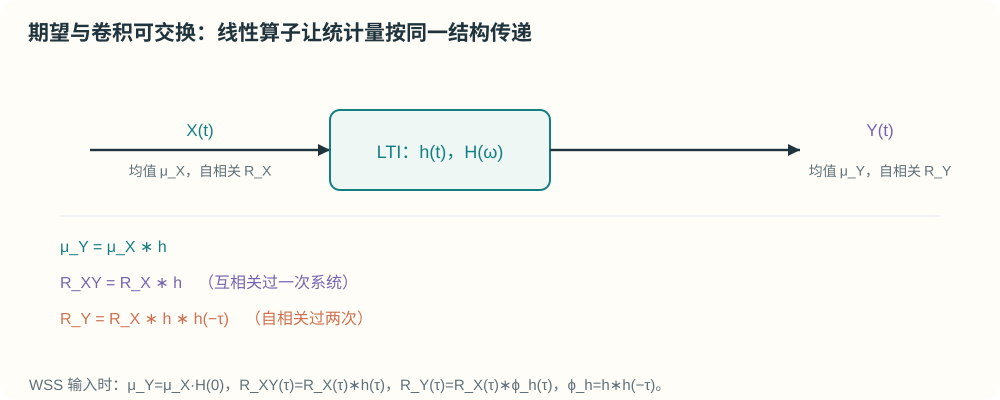
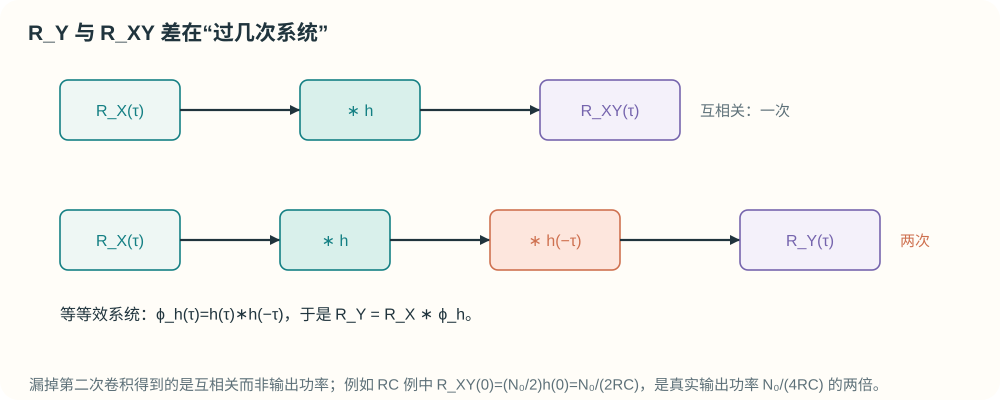
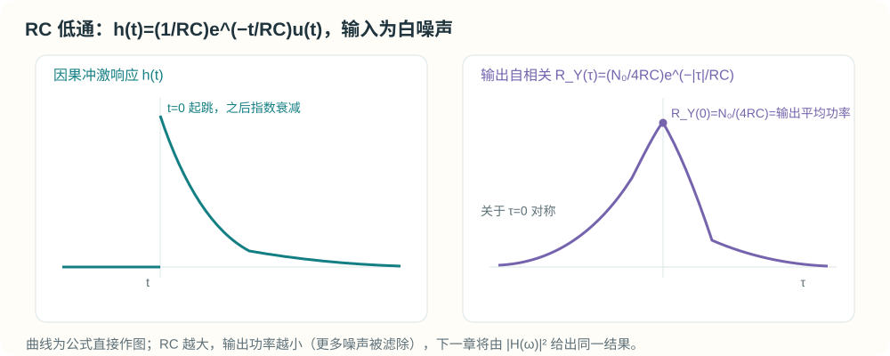

CHAPTER 12 · 系统与模型
随机信号通过线性系统（上）
随机信号进入一个线性时不变系统后，均值、互相关和输出自相关怎样传递？为什么互相关只过一次系统，而输出自相关要过两次？把“期望与卷积可交换”写成可检验的公式，需要哪些稳定性前提？
- 推导输出均值、互相关与输出自相关的时域卷积公式
- 说明期望与卷积交换的合法性条件，以及 WSS 输入下的简化
- 用 RC 低通例子验证输出功率，并识别“只做一次卷积”的错误
随机信号进入“黑箱”后，统计量怎样变化？
设线性时不变系统的冲激响应为 h(t)、频率响应为 H(ω)，输入随机信号 X(t) 产生输出
整个推导的基石是一个交换：卷积是线性运算，期望也是线性运算，所以在适当条件下 E 与 ∫h(τ)(·)dτ 可以交换次序。
交换不是无条件的：需要系统稳定，即 ∫|h(t)|dt<∞（BIBO 稳定），且输入的二阶矩有限。有了这个前提，才能用 Fubini/控制收敛把期望移进积分，否则交换可能给出错误结果。本章所有公式均在“稳定 LTI + 有限二阶矩输入”下成立。

输出均值：与冲激响应卷积
把期望移入卷积积分（依赖稳定前提），得到一般公式：
若输入宽平稳，μX 为常数，从积分中提出来，剩下的恰好是系统的直流增益 H(0)=∫h(τ)dτ：
直观含义：直流（均值）分量被系统的直流增益缩放。若 H(0)=0（如隔直电容、微分器），则输出均值为零，与输入均值无关。注意这里只说明了输出的一阶矩是常数；要得到输出宽平稳，还需要自相关也只依赖时差，这将在下一节完成。
输入输出互相关：只过一次系统
互相关 RXY(t₁,t₂)=E[X(t₁)Y(t₂)]，把 Y(t₂) 展开并把期望移入积分（只涉及一次 h）：
当 X 宽平稳、取 τ=t₂−t₁ 时，右式化简为关于 τ 的单变量卷积：
注意 RXY 与 RYX 不同：RYX(τ) 相当于把脉冲响应的时间方向反转。若输入是白噪声（单边密度 N₀），RX(τ)=(N₀/2)δ(τ)，则由 (12.5) 得到 RXY(τ)=(N₀/2)h(τ)：测得输入输出互相关就得到了冲激响应。
约定与因果性：这里取 RXY(τ)=E[X(t)Y(t+τ)]。若换成 E[Y(t)X(t+τ)]，会得到 (N₀/2)h(−τ)。因果系统 h(τ)=0（τ<0），因此相关法得到的是因果冲激响应；测量时需先确认延迟方向与参考零点。
输出自相关：双重卷积
输出自相关 RY(t₁,t₂)=E[Y(t₁)Y(t₂)] 需要把两个输出都展开，因而产生两次 h，它们是相互独立的两个积分变量：
当 X 宽平稳时，把 t₂−t₁ 记为 τ，并引入冲激响应的自相关 ψh(τ)=(h∗h(−τ))(τ)，就得到最常用的形式：
ψh 是偶函数，它把系统的影响封装成一个“生效系统”。若输入 WSS、系统稳定且二阶矩有限，则 (12.6) 的定义量只依赖时差，输出 WSS，并且与输入联合 WSS。输出方差由均值修正得到：

可算例子：RC 低通的输出自相关
一阶 RC 低通的冲激响应与频率响应为
输入是双边谱为 N₀/2 的白噪声。先算生效系统的冲激响应自相关（对 τ≥0 积分后由偶性延拓）：
因 RX(τ)=(N₀/2)δ(τ)，与 ψh 卷积只是把它乘上系数，得到输出自相关与输出平均功率：
时间常数 RC 越大（带宽越窄），输出平均功率越小，因为更多噪声被滤掉。这个结果可用频域公式 SY(ω)=|H(ω)|²SX(ω) 与 (1/2π)∫SYdω 独立验证（第 13 章），两者必须一致。

用两种方法验证 RC 输出功率
先用数值积分验证 (12.10)，再用频域公式独立地验证同一个输出功率。
from math import pi, exp, atan, isclose
RC, N0 = 1.0, 2.0
h = lambda t: (1/RC)*exp(-t/RC) if t >= 0 else 0.0
def psi(tau, n=20000, T=40.0):
dt = T/n
return sum(h((i+0.5)*dt)*h((i+0.5)*dt+tau)*dt for i in range(n))
for tau in (0.0, 0.5, 1.5):
assert isclose(psi(tau), (1/(2*RC))*exp(-tau/RC), rel_tol=2e-4)
# time-domain output power: R_Y(0) = (N0/2)*psi(0) = N0/(4 RC)
assert isclose((N0/2)*(1/(2*RC)), N0/(4*RC), rel_tol=1e-12)
# frequency domain: (1/2 pi) int (N0/2)/(1+(w RC)^2) dw
W = 1.0e7
I = (N0/2)*(1/RC)*(atan(W*RC) - atan(-W*RC))
assert isclose(I/(2*pi), N0/(4*RC), rel_tol=1e-4)
自检：若误把 R_XY(0) 当作输出功率，会得到什么？
RXY(0)=(N₀/2)h(0)=N₀/(2RC)，是真实值 N₀/(4RC) 的两倍。根源正是漏掉了第二次卷积。
参考与核查依据
- MIT OpenCourseWare · Random Processes：随机过程通过线性系统的均值与相关变换。
- ProbabilityCourse · Autocorrelation and PSD：输出功率与自相关、谱之间的一致性依据。
- ProbabilityCourse · Stationary Processes：宽平稳与联合平稳的定义。